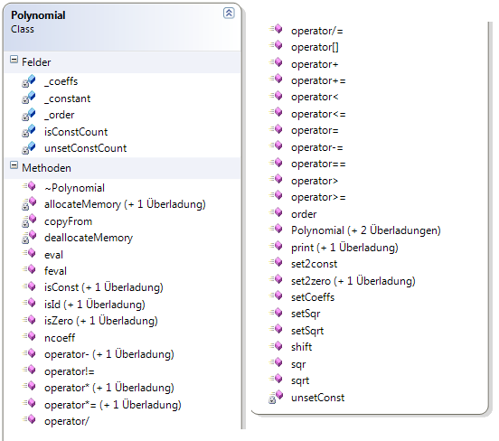
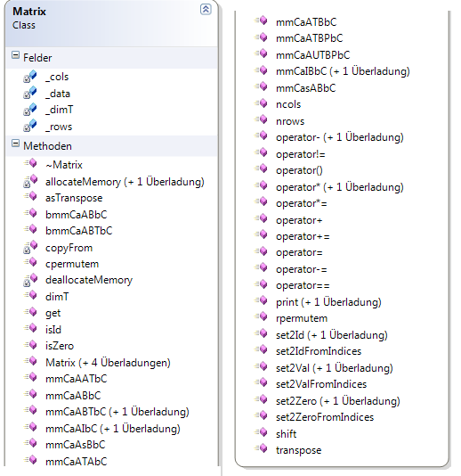
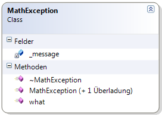

Your browser doesn't support the features required by impress.js, so you are presented with a simplified version of this presentation.
For the best experience please use the latest Chrome, Safari or Firefox browser.
Matrizen mit Taylorpolynomen
Matrizen mit Taylorpolynomen
Vortragende: Michael Berth, Marvin Ritter
Datum: 14.12.2012
Problembeschreibung
Wiederholung Taylor Polynom
Automatisierte Berechnung von Matrizen
Existente Mathe-Bibliotheken unterstützen Matrizen nur mit reelen/komplexen Zahlen
Problembeschreibung
Wiederholung Taylor Polynom
Automatisierte Berechnung von Matrizen
Existente Mathe-Bibliotheken unterstützen Matrizen nur mit reelen/komplexen Zahlen
Aufgabenstellung
Erstellung einer C++ Blibliothek (DLL)
Funktionalitäten
Portierung in andere Sprachen
Vorgehensweise
Analyse des vorhandenen Quellcodes
Erstellung eines DLL-Projektes
Implementation von GTest
Schreiben von Unittests
Implementation der Funktionalität
Erstellung eines Projektes zum Test der DLL
Testdriven Development
Wiederholung
Testdriven Development
Test schreiben
kompilieren -> Test rot
Funktionalität implementieren
kompilieren -> Test sollt grün sein
Testdriven Development
Wiederholung
Google Test Framework
Google Test Framework
Einfaches Testen von C++ Code
Plattformunabhängig
built-in Assertions
gtest Assertions
ASSERT_EQ(condition,value)
ASSERT_NE(condition,value)
ASSERT_THROW(function,exception)
ASSERT_NO_THROW(function,exception)
ASSERT_TRUE(value)
ASSERT_FALSE(value)
Google Test Framework
Einfaches Testen von C++ Code
Plattformunabhängig
built-in Assertions
Testdriven Development
Wiederholung
Google Test Framework
Klassendiagramm

Klassendiagramm Polynomial

Klassendiagramm Matrix

Klassendiagramm MathException

Klassendiagramm
Optimierungen
Portierungen
von jedem ein Port in eine andere Sprache
Marvin -> Port in Python
Micha -> Port in C#
Beispielanwendung